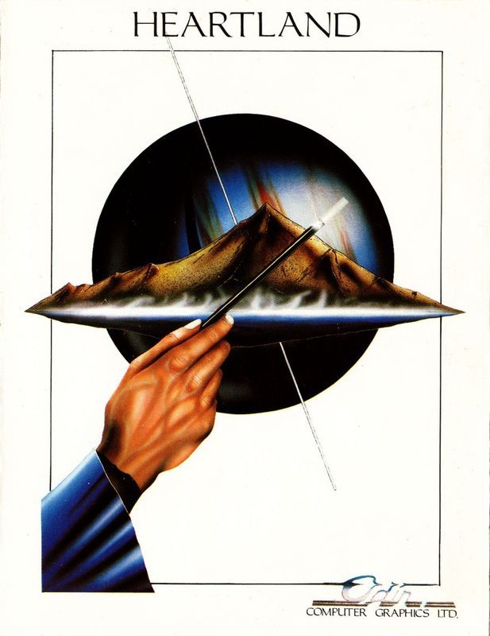
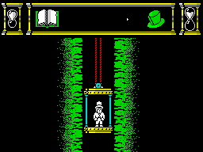
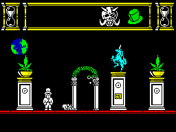

Heartland


{kind=link}

| Publisher: | Firebird |
| Price: | £9.95 |
| Year: | 1986 |
| Source: | CRASH, Issue 31 |

For thousands of years a fierce battle has been fought between the forces of good and evil. During this war, the people of the Nether World were transported from their own dimension and imprisoned inside The Book, where the conflict with the evil demon Midas and his followers rages.
The Book, in which the people of the Nether World have been trapped, was sent into our dimension arriving on Earth for safe keeping until Midas is defeated. The tome has been passed down through the generations until, one day, it comes into your hands. Being an inquisitive sort of person you sit down for a good read. As your eyes skim the pages, drowsiness sets in. Unable to stay awake, you stumble to bed, fall into a deep sleep and start to dream of many strange things.

The book and top hat are in the inventory,
and things are getting a bit bad — the face
of Midas is building up rather rapidly
A lady dressed in white begs for help in rescuing her people, trapped in the lands contained in the weird dimension inside The Book. She tells you that the final chapter of The Book has been torn out and its six pages scattered through the lands, mixed up with six Dark Pages created by the forces of evil. The people from the Nether World can only be returned to their own dimension once The Book is whole again — the missing pages must be found and replaced. The six Dark Pages must also be destroyed to put paid to the powers of Midas once and for all.
The Lady in White transports you, bed and all, into the Heartland, and the mission to free the oppressed people of the Nether World begins. Although the reign of the evil Midas is on the wane, some of his fanatical followers still roam the Heartland and do their best to hinder progress.
Movement through Heartland is achieved by scampering Mad-Hatter style from screen to screen, being careful to avoid the holes in the ground — a fall means instant death. Providing the central character is facing left or right, he can leap in the air to catch floating objects. Doorways and lifts link screens and can be used by going ‘into’ or ‘out of’ the screen. The bed permits travel between the lands that make up Heartland, once pages of The Book have been collected.

hassle you now that you’ve just fireballed
a nasty into a bag of bones. If that was
a Goouch, it’ll sproing back to life any
second. Energy is running really low —
the full countenance of Midas looms down
On the quest for The Book and its elusive pages it is wise to collect a weapon or two along the way. Contact with any of the nasties or their weapons saps strength, and relying on acrobatic skills to stay alive isn’t very clever. Weapons or objects are collected by jumping through them, whereupon they are added to the inventory in the status area at the top of the screen. The top hat is the least powerful weapon — three hits are needed to eliminate an enemy, but an unlimited number of throws is available. A knife is good for nineteen stabs, with most baddies dieing after two hits; the flaming power-ball turns even the stubbornest baddie into dust and old bones with a single hit, but only lasts for nine shots.
The evil minions of Midas do their best to sap strength — and as they remove your life force, Midas gains energy and his grinning countenance grows in the inventory. Wizards fire lightning bolts of energy and can be a right nuisance. Goouches refuse to stay dead for very long, even after they’ve been reduced to bones on the floor, and rise up out of their remains to seek vengeance. Spacemen just hang around being irritating until they are killed. Apart from evil minions, spells float around, some nice, some nasty. The large star spell homes in, saps energy and cannot be destroyed. Running away is a good move... Touching a small star spell confers temporary invincibility, while bubble clusters build up strength levels a little.
The passage of time in Heartland is shown by two revolving hourglasses, one on either side of the status area. The glass on the left revolves every couple of seconds, while the right hand hourglass takes about eight minutes to complete a revolution. Whenever you travel to another land the hourglasses reset, but tarrying longer than eight minutes in one land causes the Lady in White to run out of power. If the hourglass on the right is allowed to complete a revolution, it’s game over. First on the list of things to do has to be ‘find a weapon’ so that the score can be evened a little; then it’s time to search out The Book and begin hunting for pages. To make life that little bit easier, The Book flashes when a missing page is in the vicinity — but pages still have to be found and identified. Only the Good pages must be added to The Book: the Bad pages have to be destroyed. Let’s hope the Lady in White can hang on in there and keep you in this strange dimension until the task is completed.
CRITICISM
“Heartland in a way resembles the film, The Never Ending Story as the plot is based around a book. As with all the other Odin games this is very playable and immensely compelling. The graphics seem to be a little more impressive than those on their last release: there is plenty of colour and the animation of all the characters is superb. The sound is also excellent with lots of spot effects during the game and a very jolly tune on the title screen. I strongly recommend this one as it is a very good place of ‘finished’ software.”
“The Spectrum has had its fair share of arcade/adventures, some good some bad, but we Spectrum owners have come to expect the best from Odin. Heartland is definitely up to scratch. The graphics are superb, the tune at the beginning suits the game perfectly and the addictiveness scores very high. When the game first loaded up I was sure that I was in for something special — the title screen is superbly drawn, and like the rest of the game includes lots of colour and few attribute problems. The whole look of the game is very smart, it’s beautifully animated and very involving. Your average arcade adventurer will love it, but your old shoot em up fanatic may find it a bit boring after the effect of the graphics has worn off.”
“This is a very nice game. The graphics are fabulous, and the animation is really rather neat. The things like wizards and Goouches (mis-spelt cricket players?) are great, and the game itself is very attractively designed. Playability-wise, Heartland is very good indeed, and it’s also addictive. Lots of things combine to make this one of the better games on the Spectrum. Another credible release from the people who brought you Nodes, Arc, and Robin O’ The Wood.”
COMMENTS
| Control keys: | Top row to fire, Q-P into screen or jump when facing left or right, A-L out of screen, alternate keys on the bottom row left/right |
| Joystick: | Kempston, Interface 2 |
| Keyboard play: | A bit awkward |
| Use of colour: | No clashes, a bit sparsely used |
| Graphics: | Excellent animation |
| Sound: | Spot effects |
| Skill levels: | One |
| Screens: | 256 |
| Use of computer: | 91% |
| Graphics: | 93% |
| Playability: | 92% |
| Getting started: | 90% |
| Addictive qualities: | 93% |
| Value for money: | 89% |
| Overall: | 92% |